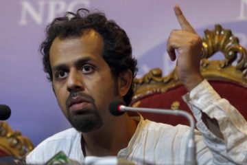

GLOBAL JOURNALIST
John Doe
News Stories

Uzbekistan continues ban on exiled journalist
Hamid Ismailov was forced to flee Uzbekistan in 1992 for what the state dubbed "unacceptable democratic tendencies" Hamid Ismailov deserves an...

‘Caged’ Egyptian journalist fled before sentencing
"We have to stand up for each other, otherwise the whole profession is in jeopardy.” Yehia Ghanem had been near the pinnacle of Egyptian...

Turkish editor departs after police raid
"I realize it was the best decision of my life because I would be imprisoned right now, like my colleagues." Shortly after Turkish police in riot...

Pakistani reporter moves to France after kidnap attempt
"I was resisting and they kept hitting me with the butts of their guns." Jumping out of a car to escape being abducted at gunpoint by the Pakistani...
Iranian student journalist fled after detention
Omid Rezaee’s work on a university magazine led to his arrest In 2009, incumbent president Mahmoud Ahmadinejad won Iran’s disputed election...